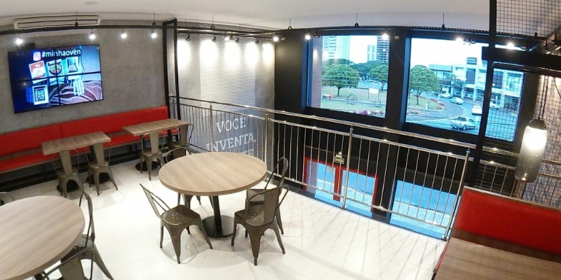
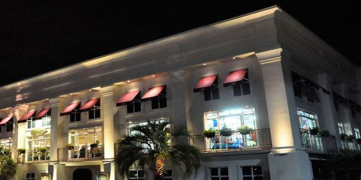
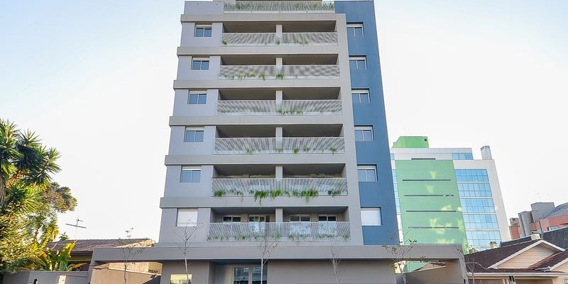
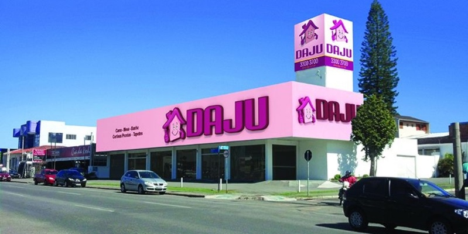
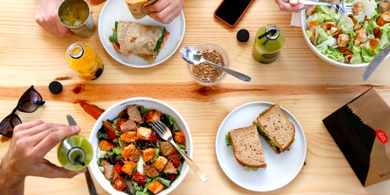
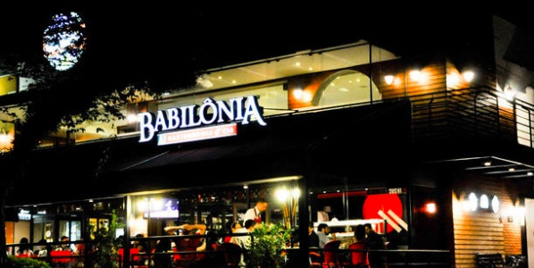
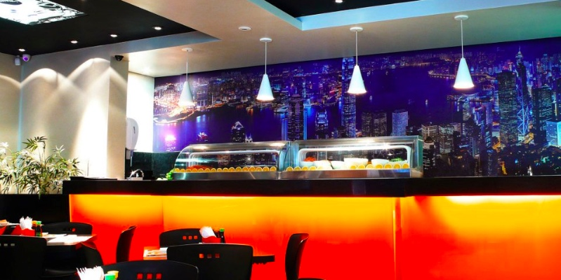

09/2018 | HashtagsPatio Batel
Durante o evento Pation Batel Fashion Walk, foram exibidas fotos do público postadas no Instagram. O sistema da Moods, permitia a equipe do shopping realizar a moderação das fotos, diretamente via app.

08/2018 | TV Video ClipesOven Pizza
Canal de TV de Videoclipes musicais para ambientação e entretenimento da Oven Pizza modelo restaurante. Com mural de fotos dos clientes no Instagram.
05/2018 | Video BrandingMadalosso
Um canal de TV próprio do restaurante Madalosso, com vídeo ambientação, mídias da marca, e mural automático de fotos dos clientes. Uma experiência visual incrível e exclusiva.
01/2018 | Tv Video ClipesEdificio Aurum
Ambientação musical para o apartamento decorado do Edifício Aurum, com referências escandinavas.
07/2017 | Digital SignageLojas Daju
Sinalização digital para as lojas Daju, como sistema que exibe nas telas o número do caixa livre, direcionando os clientes.
03/2017 | Digital SignageSimepar
TV de mapas do Sistema Meteorológico do Parana para empresas de infraestrutura, minas e energia clientes do órgão.

11/2016 | Music BrandingTasty Salad Shop
Musica dentro das lojas e playlists para o Spotify da marca.
10/2016 | Tv Video ClipesBabilonia Gastronomia
TV de Video Clipes exclusiva da marca, com 3 programações (manhã/dia/samba aos sábados), exibe também fotos que os clientes postam no instagram.
05/2016 | Music & Video BrandingKing Temaki
Programação musical e vídeo ambientação com temática Japonesa contemporânea para os restaurantes.
